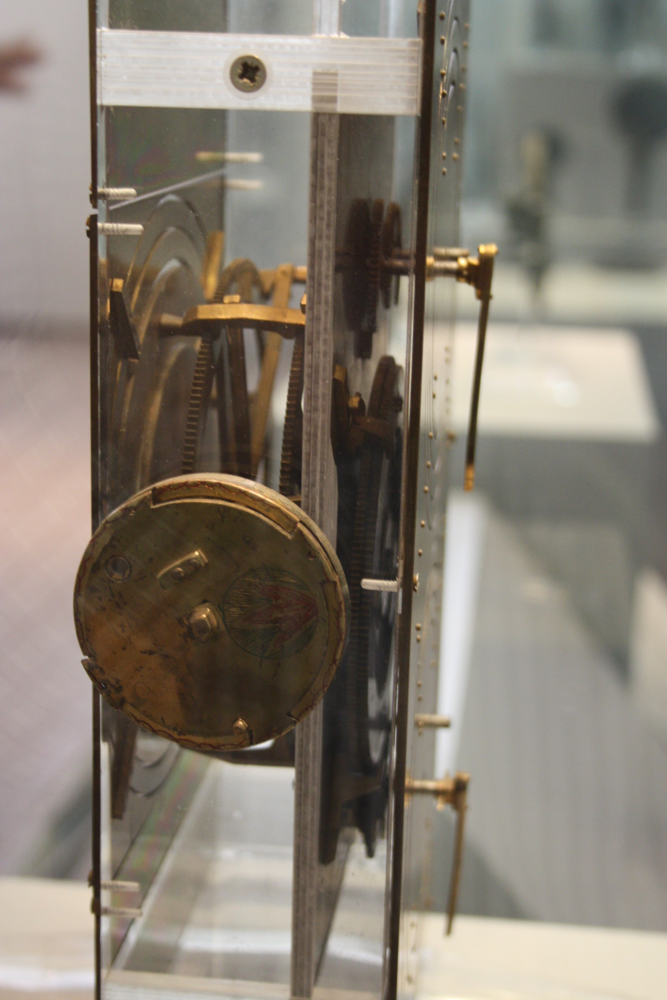

Dominic Halsmer, Michael Gewecke, Rachelle Gewecke, Nate Roman, Tyler Todd, and Jessica Fitzgerald
Oral Roberts University
Abstract
Recent advances in the field of engineering design suggest the usefulness of the concept of affordance for reverse engineering of both man-made and natural systems. An affordance is simply what a system provides to an end-user or to another part of the system. With the current recognition that engineering concepts are playing a key role in deciphering the workings of complex natural systems such as the living cell and the human brain, affordance-based reverse engineering procedures should be considered as appropriate tools for this work. Such an approach may have important implications for philosophy and theology.
Procedures for reverse engineering and design recovery have become well-defined in several fields, especially computer software and hardware, where pattern detection and identification play important roles. These procedures can also be readily applied to complex natural systems where patterns of multiple interacting affordances facilitate the development, sustenance and education of advanced life forms such as human beings. Thinking about the human condition in terms of affordances leads to a new and fruitful interaction between the fields of science and theology, in which the field of engineering plays a key role in the dialogue. Proper understanding of the interplay between both positive and negative affordances in the context of engineering design under necessary constraints leads to a clearer worldview and a better understanding of mankind’s place and purpose in the universe.
A worldview consists of what one believes to be true about the universe and all of reality, including “how things work.”1 Worldviews are formed by mentally processing and filing away the accumulated experiences of life. Inaccurate worldviews can prove hazardous to one’s health. Although young children do not know the inverse square law of gravitation from physics, they learn very quickly to respect the influence of gravity, or suffer the painful consequences. Other aspects of reality take somewhat longer to ascertain. But from the first moments of life, human beings enter this world as little private investigators, gathering clues as to how the world works. They are truth-seekers, especially when it comes to that which brings satisfaction and enjoyment. Upon discovery of a new object, they immediately embark on a crude type of reverse engineering exercise to determine what can be known about this object and what uses it might afford. Toddlers often go through a phase where they enjoy banging a spoon against pots and pans. Perhaps this affords them an early experience of understanding that they possess the power to control their environment, to some small degree. Or maybe they just like to make the banging sound. In either case, it results in increased hand-eye coordination and knowledge of causation.
As children get older and become more adept at reverse engineering techniques, they often pass through a phase characterized by repeated dissections of both natural and man-made objects. Perhaps taking apart complex organisms/devices facilitates the discovery of hidden connectivities, or internal affordances, which sheds light on the underlying mechanisms of operation. Or maybe they just like to see if spiders can still walk around with fewer than their original number of legs.2 In either case, this type of behavior is often seen as a precursor to a career in science or engineering.3 This innate and seemingly insatiable curiosity is a very interesting feature of all human beings, especially when coupled with the extraordinary comprehensibility of the world4, since it results in many profitable and satisfying affordances. Both humans and the external world appear to be engineered so that interactions with the environment result in vital knowledge, which plays a key role in gaining wisdom and maturity for a full and abundant life.
This paper is an investigation into the usefulness of state-of-the-art reverse engineering concepts and techniques for accurate worldview formation, with particular interest in how the field of natural theology may be influenced by thinking of nature in terms of affordances. An affordance is simply what an object provides to an “end user.” In the case where the object is a more complex multi-component system, affordances are also recognized to exist internally, between interacting parts of the system. Hence, an affordance is also what one part of a system provides to another part of the system. Traditionally, reverse engineering has focused on identifying functionality, but recent engineering design research (Maier, 2008, pp. 34–37)5 suggests that affordance-based reverse engineering may be more appropriate for handling the complexity associated with many natural systems. It may also be more helpful in design recovery, a subset of reverse engineering that attempts to work out what a system was designed to do, how it does it, and why it works the way it does. Design recovery goes beyond simply examining a system’s component parts and their interactions and attempts to identify both purpose and logical organization. Although not expected to lead to definitive results in the case of natural systems, this approach contributes to a better understanding of why the universe is the way it is6, resulting in positive contributions to the field of Christian apologetics, and consistent with a new vision for natural theology.7
Reverse engineering is the process by which anything that has been made is analyzed to determine the original design information that went into its development.8 Though not a major branch of engineering curriculum in academia, reverse engineering has been studied and implemented extensively in many industries where it often assists in gaining a competitive advantage. In this sense it is considered to be a mature field in practice, if not in theory. Engineering programs at some universities are now recognizing the value of reverse engineering activities as a design training exercise for students (Wu, 2008, pp. 57–59). They disassemble and analyze power tools and other man-made devices in order to see how design principles and practices guide engineers in developing a well-made product. Reverse engineering concepts are also used extensively in deciphering unfamiliar or poorly documented computer software and hardware systems (Eilam, 2005).
But recently reverse engineering techniques have proven to be surprisingly fruitful when applied to natural systems. Although the field of systems biology9 has expanded rapidly in the past few years, there is a long history behind this approach. One of the earliest scientists/engineers to record detailed reverse engineering studies of biological systems, including extensive dissections of the human body, was Leonardo da Vinci. Concerning this work, he wrote that “the human foot is a masterpiece of engineering and a work of art.” Evidently, his intimate knowledge of biological systems led him to a deep appreciation for the beautiful functionality they exhibit. In the 1600s, William Harvey discovered the detailed flow patterns of blood within the human body by asking himself how an engineer would have constructed such a system (Auffray & Noble, 2009).
In more recent times, scientists like E. O. Wilson and Daniel Dennett concur with the necessity of the reverse engineering approach. Wilson writes that “the surest way to grasp complexity in the brain, as in any other biological system, is to think of it as an engineering problem” (Wilson, 1998, p. 112). Dennett claims that “you just can’t do biology without doing reverse engineering, and you can’t do reverse engineering without asking what reasons there are for whatever it is you are studying. You have to ask ‘why’ questions” (Dennett, 1996, p. 213). Though Dennett may disagree with the idea of ultimate purpose, these are questions of a teleological nature, and other scientists and engineers are coming to the same conclusion. For example, Caltech researchers ask “What is/are the purpose(s) of this biological system?”10 and suggest that biological systems be approached from an “engineer’s perspective.” Arthur Lander at UC Irvine has proposed a system for thinking in these terms and writes that “these elements can be seen as the foundations for a new calculus of purpose, enabling biologists to take on the much-neglected teleological side of molecular biology. ‘What purpose does all this complexity serve?’ may soon go from a question few biologists dare to pose, to one on everyone’s lips” (Lander, 2004).
If such teleological, yet scientific questions are being asked at the micro-scale, then it seems reasonable that such questions could also be posed at the macro-scale. Furthermore, since such profitable answers are being found by reverse engineering at the level of the cell, it makes sense that good answers might also be found on a larger scale using this approach. The idea that qualitative questions can be answered through quantitative approaches is affirmed by Lander in another article where he summarizes the lessons learned from systems biology. He concludes the article with, “They teach a lesson about biology that is as important as it is surprising: sometimes, answering the most qualitative of questions – ‘Why does the organism do it that way?’ – succeeds only through the most quantitative of approaches” (Lander, 2007). These insights from systems biology suggest that reverse engineering of natural systems may not only reveal the inner workings of the cell, but may also assist in the acquisition of a more complete understanding of mankind’s origin, place and purpose in the universe.
Even before the time of Christ, Greek and Roman philosophers practiced a kind of reverse engineering of natural systems, interpreting the beneficial order in the universe as an indication of a larger plan or design of a Mind (Sedley, 2009). Socrates and Plato believed that in addition to providing the initial order to the universe, this Mind also acted to sustain it at all times. About 50 years before Christ, Marcus Cicero, who brought Greek philosophy to the Romans, even suggested that various characteristics of the creating deities could be inferred from the highly ordered work of their hands. He interpreted harmonious movements in nature by referring to similarities with man-made objects when he wrote, “When we see some example of a mechanism, such as a globe or clock or some such device, do we doubt that it is the creation of some conscious intelligence? So when we see the movement of the heavenly bodies . . . how can we doubt that these too are not only the works of reason but of a reason which is perfect and divine?” (Cicero, De Natura Deorum, 2.38.97, trans. 1972)
Paul the Apostle wrote in a similar vein to the Romans when he penned the well known verse, “For since the creation of the world God’s invisible qualities—his eternal power and divine nature—have been clearly seen, being understood from what has been made, so that men are without excuse” (Romans 1:20 NIV, emphasis added). Paul, being a highly educated Hebrew from Tarsus, would have been well aware of the prevailing philosophies of his audience. His words seem to mesh nicely with the idea of reverse engineering, which is about gleaning design information regarding an object, and if possible, also uncovering what may be known about the original engineer and his/her intentions. This is largely accomplished through a systematically obtained understanding of the object in the context of its surrounding culture and environment. In this verse, Paul may be referring to human understanding derived from observations of specific objects in nature, or the entire cosmos, or both.11 It is suggested that modern reverse engineering techniques would find profitable application in both cases.
Nineteenth century natural theologians such as William Whewell and William Buckland practiced an early form of reverse engineering of natural systems, focusing on the implications for a Christian worldview. For Whewell, there was one Biblical teaching that stood out as a heuristic for science: that human beings are created in the image and likeness of God (Fuller, 2006, p. 283). This similarity between creator and creature, like the match between the complexity of the universe and mankind’s ability to comprehend it, should facilitate the process of reverse engineering. Recognizing that one could never fully comprehend the transcendent engineering of the creator, nonetheless, for a Christian, there is a sense that science is the gift and privilege of “thinking God’s thoughts after him.”12
One of William Buckland’s memorable expositions involved the design of Megatherium, an enormous extinct relative of the sloth (Roberts, 1999, p. 245). Leading anatomists of the time regarded this animal as having a poor and bungled design. But Buckland chose it to show, by “careful and rigorous anatomical description and then the application of reverse engineering,” that it was “perfectly designed or adapted for its environment. . . . Here, for Buckland, design was not so much a scientific theory, but rather a metaphysical or theological outlook, which gave confidence or grounds for applying reverse engineering procedures”(Roberts, 1999, p. 248). It makes sense for a Christian engineer or scientist to apply such procedures in laboring under the hypothesis that the universe is an engineered system13, without any preconceived notions about how such transcendent engineering was accomplished. This is consistent with the thinking of leading theologians of today, like Alister McGrath, who suggests that natural theology is to be understood as “the enterprise of seeing nature as creation, which both presupposes and reinforces fundamental Christian theological affirmations” (McGrath, 2006, p. 64).
McGrath also asserts that “the order of things determines how things are known . . . or, to put it more . . . formally: ontology is to be allowed to determine epistemology”(McGrath, 2006, pp. xv–xvi). Again, this is consistent with a reverse engineering mindset, which approaches the task with a certain humility, recognizing that what is discovered will in large part determine how to proceed with the overall investigation. In exploring the metaphor of nature as book, philosopher Angus Menuge writes that “a good scientific interpretation is one that allows nature to speak for itself and yet which is motivated by and connected to an overarching frame of meaning provided by revealed theology” (Menuge, 2003, p. 96).
In a response to Menuge, theoretical chemist Walter Thorson calls for maintaining a clear distinction between science and theology. He writes,
Even the most rudimentary biosystems manifests logical organization directed to certain (limited) achievements. . . . This logical organization according to function can be explained on its own terms – as an objective aspect of a naturalistic science; interpretation in terms of divine agency is not essential. By such a naturalistic study of creation in its own contingent terms of reference, we would only discern the embodied logic of creaturely things themselves, not their transcendent divine purpose or design. . . . Theologically, such a situation invites the idea that God’s work of creation, like his work of redemption, may be seen as the expression of a self-giving, self-emptying love: that is, creation seen as kenosis. While this view poses some difficult questions, it deserves serious consideration. (Thorson, 2003, p. 101) But even with the attempt to keep science and theology separate, it seems likely that such theological musings will also influence aspects of an ongoing scientific approach. For those pursuing advances in both science and theology, the two fields are often found to be quite compatible, leading to many fruitful interactions.
An example of a philosopher who applies reverse engineering techniques to the works of “mother nature” is found in the philosopher Dennett. He proposes that the same “artifact hermeneutics” be used when reverse engineering is applied to both man-made and biological systems (Dennett, 1990, p. 177). He further asserts that optimality considerations should be used, rather than attempting to analyze the intentions of a designer. As an example, he cites the Antikythera device, a complex geared mechanism discovered in an ancient shipwreck in 1900. Dennett contends that “it was—almost certainly—an orrery or planetarium, and the proof of that is that it would be a good orrery. That is, calculations of the periods of rotation of its wheels led to an interpretation that would have made it an accurate (Ptolemaic) representation of what was then known about the motion of the planets” (Dennett, 1990, p. 180). Dennett is correct, as far as the function of the device, but many other interesting questions might be addressed through a more complete approach to reverse engineering.

Jo Marchant details the entire story of the reverse engineering of the Antikythera device in a fascinating book (Marchant, 2009). A significant amount of design recovery was accomplished in terms of the purpose of the device and the identity and thinking of the original engineer(s). Referring to Greek letters engraved on the casing of the device, she writes, “[The reverse engineer] also noted that the letters were so precise they must have been engraved not by a labourer but by a highly trained craftsman” (Marchant, 2009, p. 55). She also recognized that the incorporation of historical and cultural information from the time period was valuable for unlocking some of the mysteries of the device. As an example, consider the following passage: “Archaeologists also studied the rest of the salvaged cargo. Their discoveries help to paint a vivid picture of when the ship sailed, where her load was being taken, and the sort of world from which she came. From there we can guess at the origins of the Antikythera mechanism itself, and how it ended up on its final journey” (Marchant, 2009, p. 61). Thus, it is clear that reverse engineering is most effective when all pertinent information is brought to bear. This is accomplished by looking at the “big picture” instead of limiting the study to the narrow set of data obtained by simply dissecting the specimen.14
Dennett’s approach to reverse engineering through optimality considerations has recently been criticized from a couple directions. Philosopher Robert Richardson contends that such an approach to evolutionary psychology lacks the standard level of evidential support enjoyed by evolutionary biology (Richardson, 2007).15 A second criticism, that gets more to the heart of the matter, looks specifically at Dennett’s insistence on optimality as the guiding beacon of the reverse engineering enterprise. Philosophers Krist Vaesen and Melissa van Amerongen have recently published an extensive analysis of Dennett’s artifact hermeneutics. They argue that “Dennett’s account is implausible . . . [and] conclude that, quite in contrast to Dennett, intentional considerations play a crucial role in artifact hermeneutics, and even stronger, are necessary for the sake of simplicity and precision” (Vaesen & van Amerongen, 2008, p. 779).
Vaesen and van Amerongen claim that artifacts should be interpreted by relying both on optimality and intentional considerations, recognizing that this hampers Dennett’s strategy of reverse engineering artifacts and organisms in the same way (Vaesen & van Amerongen, 2008, pp. 794–795). Their thoughts on how Dennett’s unified approach might still be achieved leads to an interesting final paragraph. They write, Of course, it still might be possible to establish a generic interpretive program, including artifacts and biological items . . . What is needed to argue for the importance of intent in the interpretation of organ(ism)s, is a proof that intent reveals things that remain hidden under an optimality account or that it is beneficial to ignore optimality and dig for a designer’s – i.e., nature’s – intentions instead. It is far from evident that such things can be done without entering the waters of creationism. Fortunately, the burden of proof is on, if any, those who think our understanding of biofunctions is – or should be – linked to “Mother Nature’s” intentionality. (Vaesen & van Amerongen, 2008, p. 795) Vaesen and van Amerongen’s demand for a proof that intent reveals things that remain hidden under an optimality account is quite a stringent requirement. In the remainder of this article it should become clear that, although short of a proof, there is a significant amount of evidence that this is the case. Considerations of intention while conducting affordance-based reverse engineering of natural systems do reveal valuable things that remain hidden and unrealized under Dennett’s approach.
If reverse engineering really is a profitable method for studying natural systems, then this approach should be fully explored to ensure that maximum benefit is achieved. A valuable resource that discusses function-based methods for hardware systems is Product Design: Techniques in Reverse Engineering (Otto & Wood, 2001).16 However, a more concise, yet detailed description of the process is found in an article entitled “On Reverse Engineering” by M. G. Rekoff, Jr (Rekoff, 1985). He describes a method for systematically conducting the reverse engineering activity, noting that it “is not really greatly different from that of detective work in a criminal investigation or of conducting military intelligence operations.”(Rekoff, 1985, p. 245) In a nutshell, Rekoff recommends the decomposition of existing structural hierarchy in developing functional specifications until the mechanism-of-operation is completely understood. This is unpacked in the following steps of his grand plan for conducting a reverse engineering effort . . .
This process continues until the degree of understanding is adequate for the purposes of the reverse engineering effort. For any particular item within the overall system being analyzed, “the generic process consists of the following five sequenced steps; assimilate existing data; identify elements; disassemble; analyze, test, and dimension; and complete documentation.” Each of these steps is explained in very helpful detail in Rekoff’s previously-referenced article.
Another helpful article, although dealing mainly with the reverse engineering of computer software, introduces the concept of “design recovery.” “Reverse Engineering and Design Recovery: A Taxonomy” by Elliot Chikofsky and James Cross defines design recovery as “a subset of reverse engineering in which domain knowledge, external information, and deduction or fuzzy reasoning are added to the observations of the subject system to identify meaningful higher level abstractions beyond those obtained directly by examining the system itself.”(Chikofsky & Cross II, 1990, p. 15) In other words, the goal of design recovery is to work out, at a higher level of understanding, what a system or component was engineered to do, and (to some degree of confidence) why, rather than just examining its subcomponents and their interrelationships. This generally involves extracting design artifacts by detecting design patterns, for example, and synthesizing abstractions that are less dependent on implementation. The authors believe that it is these higher level abstractions that are the key to fully reverse engineering complex natural systems. In another article, Ted Biggerstaff further expounds on the idea, “Design recovery recreates design abstractions from a combination of code [system], existing design documentation (if available), personal experience, and general knowledge about problem and application domains. . . . Design recovery must reproduce all of the information required for a person to fully understand what a program [system] does, how it does it, why it does it, and so forth.”(Biggerstaff, 1989, p. 36)
A design recovery framework for mechanical components that was recently developed by engineering researchers at the University of Windsor in Canada appears to be a promising and comprehensive approach to this problem that may be transferable to natural systems. R. Jill Urbanic and Waguih ElMaraghy contend that
there must be a methodology for recognizing design intent. The feature shapes are not arbitrary, nor is their pattern of arrangement. . . . A form-function link needs to be established at different levels of granularity to infer the designer’s intent. . . . The proposed framework includes mapping from the application domain to the functional requirements and integrates the bottom-up reverse engineering and top-down forward engineering processes and perspectives. The objective is to be able to develop a fully described model that considers the abstract design concepts and rationale along with the specific physical details. (Urbanic & ElMaraghy, 2009a, p. 195) The framework developed in Urbanic and ElMaraghy’s paper is utilized to conduct reengineering (or value engineering – improving a system based on a reverse engineering analysis) in a subsequent paper by this group. Here they claim that “gathering this [design recovery] information allows the [reverse engineer] the means to make informed decisions as to whether the current component design is adequate, or how may it be modified to add value” (Urbanic & ElMaraghy, 2009b, p. 166). In her book Reverse Engineering, Kathryn Ingle emphasizes the importance of design recovery data for reengineering. She writes, “This is no small amount of information if a future attempt at value engineering is to be made. Knowledge of the hows and whys of a part’s design allows the [reverse] engineer to make quantum leaps in thought when seriously contemplating value engineering” (Ingle, 1994, pp. 65–66). As researchers increasingly apply reverse engineering to living systems,17 a natural extension will involve the application of value engineering to human beings and the fundamental problem of the human condition. Christian engineers/scientists, who are aware of the ultimate solution to this problem, should be ready to present this solution in a way which people can understand, especially other engineers/scientists.18 One approach is to demonstrate the rational (though not absolutely compelling) basis for such a life-changing decision by couching it in terms of the mature fields of reverse engineering and value engineering. This strategy is enhanced further by incorporating the concept of affordance into the reverse engineering process.
In a recent article in Mechanical Engineering, Jonathan Maier calls for a rethinking of design theory by emphasizing that design problems begin at the system level. He claims that “individual components can be designed only after the whole problem has been understood and defined at the system level and then decomposed into subsystems and so forth, down to individual components that can be designed using the hard engineering sciences and traditional analysis methods” (Maier, 2008, p. 34; Maier, 2011). Major engineering projects have become so complex and far-reaching that George Hazelrigg has argued that design is no longer just multidisciplinary; it is omni-disciplinary in that any and all disciplines may be involved in the solution to a particular design problem (Hazelrigg, 1996). Maier is convinced that the complexities of systems thinking and user interactions require design engineers to move beyond the level of simply designing for component or product function. The concept that he proposes is affordance, which is what a system provides to a user or to another system. An (positive) affordance is what something is “good for” or “good at” and may serve as an underlying and unifying principle in the science of design (Maier & Fadel, 2001). It is important to note that the affordances of a system depend on the physical form of the system, whereas the functions of a system do not. This is a useful feature “because it allows engineers to analyze and compare the affordances of product concepts (especially at the system level) as well as of existing products for reverse engineering” (Maier, 2008, p. 36).
Although the term “affordance” has its roots in Gestalt psychology (Koffka, 1935), perceptual psychologist James Gibson defined it in the modern era as “what it [the environment] offers the animal [user], what it provides or furnishes, either for good or ill. . . . I mean by it something that refers to both the environment and the animal [user] in a way that no existing term does. It implies the complementarity of the animal [user] and the environment” (Gibson, 1979, p. 127). Donald Norman, in his book The Design of Everyday Things (Norman, 1988), steers the concept toward engineering design, but stops short of Maier’s contention that it is fundamental to the design or reverse engineering of any artifact. However, Norman does admit that “affordances provide strong clues to the operations of things” (Norman, 1988, p. 9). Maier emphasizes that the affordance-based approach to design captures important interactions within the engineer-artifact-user triad that the function-based approach misses. In reverse engineering applications, a fourth role must be added to the triad—that of the investigator or reverse engineer. Interesting interactions may be elucidated among these four roles by incorporating the concept of affordances. Maier compares the strengths and weaknesses of function-based and affordance-based design and comes to an interesting conclusion; there are several “appealing synergies” or “ways in which strengths of function complement weaknesses of affordance, and ways in which the strengths of affordance complement the weaknesses of function” (Maier & Fadel, 2002). These synergies include a better view of “the big picture,” a uniting of design methods, and a theoretical underpinning of design that illuminates the proper role of function.
In further work by Jonathan Maier and Georges Fadel on affordance-based methods for design and reverse engineering, they describe two kinds of affordances. Artifact-user-affordances (AUA) are defined as “the set of interactions between artifact and user in which properties of the artifact are or may be perceived by the user as potential uses. The artifact is then said to afford those uses to the user. Artifact-artifact-affordances (AAA) can be defined as the set of interactions between two artifacts in which some properties of one artifact interact in some useful way with properties of the other artifact” (Maier & Fadel, 2003). In addition, they explain how both types of individual affordances can be considered as positive or negative depending on whether the interaction is good for the system or not. Furthermore, each affordance can have a quality of interaction associated with it depending on how well the interaction serves its role. For example, a chair may afford sitting much better than a large rock, and the weight of a large rock may be seen as a negative affordance if portability is an issue. Maier and Fadel claim that a systematic evaluation of the affordances of each part of a system can be combined into a comprehensive affordance structure matrix (ASM), including both AUA and AAA (Maier, Ezhilan, and Fadel, 2003; Maier, Sandel, & Fadel, 2008). The system is then effectively reverse engineered in the sense that its operation is well understood. The ASM lists system components on a horizontal axis and affordances along a vertical axis. The matrix is populated by identifying which components are associated with each affordance.
In March of 2002, the cover story for Science was entitled “Reverse Engineering of Biological Complexity” (Csete & Doyle, 2002), which encouraged the application of engineering concepts like those borrowed from control theory to better understand the complex workings of biological systems. The article also emphasized the modularity and protocols that were being discovered within such systems at the time. Protocols were described as “rules that prescribe allowed interfaces between modules, permitting system functions that could not be achieved by isolated modules” (Csete & Doyle, 2002, p. 1666). Thus, understanding interacting modules and the protocols that specify those interactions is critical to identifying the affordances between modules (AAA). An interesting analogy was drawn between biological structures and the modules and protocols of the Lego toy system, demonstrating in multiple ways how biological systems exhibit features that are readily associated with engineered devices. The article concludes by encouraging biologists and engineers to “compare notes.” Since this paper was published, it seems that many have been doing just that.
Physiologist Robert Eisenberg comments that it is most helpful to “look at biological systems through an engineer’s eyes” (Eisenberg, 2007, p. 376). Emphasizing how this leads to successful experimentation, he writes, “But it seems clear, at least to a physiologist, that productive research is catalyzed by assuming that most biological systems are devices. Thinking today of your biological preparation as a device tells you what experiments to do tomorrow.” Many of these types of experiments serve to identify affordances. At Stanford University, an aerospace engineer, Claire Tomlin, and a molecular biologist, Jeffrey Axelrod, teamed up to extol recent efforts aimed at “understanding biology by reverse engineering the control” (Tomlin & Axelrod, 2005, pp. 4219–4220). They summarize an extensive reverse engineering study of the mechanism used by bacterium E. coli to combat heat shock (El-Samad, Kurata, Doyle, Gross, & Khammash, 2005), claiming that it “is just what a well-trained control engineer would design, given the signals and the functions available” (Tomlin & Axelrod, 2005, 4219). Viewing the heat shock response as a control engineer would, the researchers developed a reduced order mathematical model to analyze the dynamics of each of the interacting modules. This analysis then motivated a series of simulation experiments on a larger mathematical model. The experiments involved disconnecting one or more information pathways (both feedback and feedforward protocols) which allowed comparison of various closed-loop and open-loop responses. As a result, they obtained a clearer picture of how certain information pathways and protocols afforded robustness, efficiency, and noise attenuation. Tomlin and Axelrod claim that this analysis
is important not just because it captures the behavior of the system, but because it decomposes the mechanism into intuitively comprehensible parts. If the heat shock mechanism can be described and understood in terms of engineering control principles, it will surely be informative to apply these principles to a broad array of cellular regulatory mechanisms and thereby reveal the control architecture under which they operate . . . Certainly these kinds of analyses promise to raise the bar for understanding biological processes. (Tomlin & Axelrod, 2005, p. 4220)
In order to illustrate the application of this approach to even more complex natural systems, consider the further example of a human being. Is it possible, or even reasonable, to apply reverse engineering and design recovery techniques in an effort to gain insight into this system?19 Of course, this approach assumes the possibility of a designer whose products lend themselves to such techniques. Multiple popular worldviews adhere to the existence of a master engineer/architect of some kind, and the point was made earlier that complex natural systems are currently being successfully reverse engineered. Thus, this seems like an interesting and fruitful pursuit. This approach is especially fitting under the further assumption that humans are “made in the image” of such a master engineer, which is characteristic of a Christian worldview. This would presumably help to explain why there is such a profitable match between the complexity of the cosmos and the mental capabilities of humans. Such a match forms the basis for any successful reverse engineering of natural systems. However, the Christian worldview also entails the existence of an adversary who opposes the work of the master engineer, which may make the reverse engineering task more challenging.
The first step is to define the roles of artifact, user, investigator, and engineer that make up the big picture of design and reverse engineering. For this case the artifact can be considered as the human being, although it is difficult to separate humans from their finely tuned cosmic environment. The end user is the human mind, or consciousness, in the sense that human minds make use of their bodies in living their lives. In a Christian worldview, there is also a sense in which God is the end user, since he has made all things for himself. The investigator, or reverse engineer, is anyone who is curious enough to pursue this kind of study. It is important to recognize this so that the investigator can limit the bias that affects his or her analysis. Admittedly, there is some overlap among these roles, but that should not negate the potential fruitfulness of this analysis. As for the engineer, whether it is the tinkerer of naturalism, or God, or space aliens, it is hoped that more can be discovered about this engineer’s motives, methods and intentions (or lack thereof) by properly applying the reverse engineering process.
Just listing all the affordances that the universe (artifact) exhibits towards the human consciousness (user) would be a complex and time-consuming task, but by looking at those that are the most significant, insights can begin to be gleaned. To start off, the cosmos affords humans with the ability to learn. By studying the universe and its interactions, such as those between stellar bodies, molecules, or light, humans are able to gain knowledge about why previous natural events occurred the way they did and predict how future events might follow the same pattern. The human mind is able to experience these because of the sensory organs, which the human body, as an artifact in the universe, affords to the human mind.
This brings up an interesting question; what else does the human body afford the consciousness? According to Oxford philosopher Richard Swinburne (Swinburne, 2004, p. 169), in order to be able to interact and learn about the environment in which it is placed, and yet still be a humanly free intelligence, the mind needs the human body to contain:
Another affordance that the universe provides the human consciousness is an environment to thrive in.20 One key aspect of the universe is the fact that it is so finely tuned.21 As Swinburne states,
Not all initial conditions (ICs) or laws of nature would lead to, or even permit, the existence of human bodies at some place or other, and at some time or other, in the universe. So we may say that the universe is ‘tuned’ for the evolution of human bodies if the laws and initial conditions allow this to occur. If only a very narrow range of laws and ICs allow such evolution, then we may say that the universe is ‘fine-tuned’ for this evolution. Recent scientific work has shown that the universe is fine-tuned. (Swinburne, 2004, p. 172) Now, the existence of the human body, due to these fine-tuned conditions is an important aspect of human consciousness because of the affordances mentioned above. What is even more amazing is that the fine-tuning of the universe not only allows for life but allows for persons who are able to question why the universe is the way it is. The fine-tuning of the universe then also affords the human consciousness with the ability to discover attributes of the engineer by questioning and observing how something so encompassing as the cosmos can be so elegant and well-engineered. With this in mind, the investigator can then appreciate the overlap with the area of the user as the human consciousness. Considering that the user and investigator are roles filled by the same person brings a new dynamic and even more complex affordances between the different components of the system. As the investigator, the human consciousness begins to question why things are the way they are within the system, and if there is any way to improve the system. Humans have been attempting this from the beginning of conscious thought with innovations and inventions meant to increase the quality of life. Recently, what scientists have discovered is that many of these new inventions have already existed in nature. A prime example of this is the boat propeller and the bacterial flagellum. The ability of humans to not only perceive affordances but also imagine how they might be creatively achieved is discussed in an article entitled “Affordances are Signs”22 by psychologist John Pickering (Pickering, 2007). He asserts, The characteristic reflexivity of human cognition means that we are not only able to perceive the world as it is, that is, to perceive the affordances that actually surround us, but also to perceive affordances that do not yet exist, that is, to perceive the world as if it were otherwise. When we take a rock and modify it with blows until it functions as a blade, we do just that. We not only perceive what is, but also what may be and hence we may take meaningful, intentional action to bring it about if we so choose. (Pickering, 2007, p. 73) The interesting thing that Swinburne points out is that the choices humans make not only tend to affect the world and others around them but also to affect their own characters (recursion), giving them some measure of influence over the kinds of people they eventually become. This is a very interesting affordance, which when coupled with the human ability to envision a preferable future, leads people to form various purposes related to self-organization (autopoiesis) and self-improvement. However, a common experience among humans is the inability to realize accepted standards and expectations. In an article entitled “The Kingdom of God and the Epistemology of Systems Theory: The Spirituality of Cybernetics” (Buker, 2009), William Buker, a Professor of Counseling, suggests that features of the human condition such as recursion and autopoiesis, combined with the nature of the universe, serve to invite humans into a more complementary coupling with the larger mind of the master engineer. He also points out how this idea of fitting with the environment rather than fighting against it is consistent with Jesus’ message of the kingdom of God. Obviously, such possibilities require the recognition of valid epistemologies beyond those of science and history, such as are found in human experiences of joy, faith, hope, and love. Some researchers are suggesting that it is time to more fully explore the wide breadth of knowledge found in the human condition if a clearer picture of mankind’s purpose and place in the universe is to be achieved. Alexander Astin, Founding Director of the Higher Education Research Institute at UCLA, argues that spirituality deserves a central place in higher education (Astin, 2004). He claims that “more than anything else . . . [this] will serve to strengthen our sense of connectedness with each other. . . . This enrichment of our sense of community will not only go a long way toward overcoming the sense of fragmentation and alienation that so many of us now feel, but will also help our students to lead more meaningful lives as engaged citizens, loving partners and parents, and caring neighbors.” At the beginning point of this reverse engineering project, perhaps it is too early to speculate about indications of the ultimate purpose for mankind, but it seems that Dr. Astin has put his finger on the pulse of what may be humanity’s greatest desire, function and purpose—that of love. A scientific perspective of love is currently being pursued by the Institute for Research on Unlimited Love at Case-Western Reserve University. Thomas Jay Oord, theologian for the institute, has written extensively on this topic, including Science of Love: The Wisdom of Well-Being (Oord, 2004). He says that “to love is to act intentionally, in sympathetic response to others (including God), to promote overall well-being” (Oord, 2004, p. 75). Given the high value that humanity has placed on love throughout history, and its power to change lives for the better, it is hard to imagine that, if humans do have purpose, it would not have something to do with love. One example of a scientifically rigorous and testable model of the cosmos, which postulates the love of a master engineer and encourages humans to return that love as part of their primary purpose, is documented in the book More than a Theory by astronomer Hugh Ross (Ross, 2009).
The advance of science in several areas is helping to identify the many affordances that the cosmos provides for higher life forms like human beings (Barrow, Morris, Freeland, & Harper Jr, 2008). These affordances are facilitated by the integration of the many subsystems of our world, which also exhibits affordances between subsystems. The connectedness of the universe is aptly described in the following quote by the famous naturalist, John Muir, “When we try to pick out anything by itself, we find it hitched to everything else” (Muir, 1911, p. 110). Some scientists have suggested that such affordances can lead to a clearer understanding of worldview, and human meaning and purpose (Denton, 1998). This is not surprising since that is ultimately what reverse engineering and design recovery procedures were designed to detect: what was the original engineer thinking? It is clear that the application of reverse engineering to natural systems cannot be separated from the worldview of the investigator because the concept of an engineer is critical to the study. Recall the importance of the relationships between engineer, artifact, and user in this regard. The authors have suggested that there is another entity that should be included in this grouping: the investigator or reverse engineer. In fact, the worldview of the reverse engineer, while playing a role in the study, may also be further shaped in the midst of the study. A classic example is the case of Charles Darwin, who, early in his career, greatly admired the works of natural theology, such as penned by William Paley, while later on, he expressed doubts as described in his writings.23
In teaching the process of reverse engineering and applying it to natural systems, it must be recognized that worldview plays an important role, and that worldview implications may result. The particular worldview of an investigator may or may not facilitate discovery and reverse engineering in natural systems. The extent to which a worldview is helpful in this regard is simply the extent to which a worldview is an accurate understanding of reality. Care should be taken to allow students and investigators to shape their worldviews in accordance with the evidence. Worldviews are determined based on various kinds of evidence and experiences, but scientific evidence typically plays a major role. The fact that the natural world is so readily and profitably reverse engineered suggests that the cosmos actually is an engineered system; it is the work of a Mind with extraordinary engineering expertise. Investigators should not hesitate to consider this perspective, since it not only seems to facilitate discovery but may also provide a sublimely satisfying understanding of personal meaning and purpose.
A research study involving undergraduate honors students and faculty from a diversity of academic fields, including engineering, theology, psychology, engineering physics, music, biology, chemistry, and biomedical engineering is currently underway at Oral Roberts University (Halsmer & Beck, 2012). The students engage in weekly extra-curricular research and discussions centered on the hypothesis of “God as Engineer.” This hypothesis is continuously evaluated in light of a serious engagement with mainstream scientific understandings as well as a respect for traditional religious truth claims. Students assess research in the sciences, mathematics, humanities, theology, and reverse engineering methodologies for applicability to the hypothesis in question. Weekly meetings are held to discuss findings and develop journal articles, conference papers, and presentations. The diversity of academic fields represented provides rich and fertile ground for discussion and conflict resolution. Survey data from current and previous group participants suggest that these studies help students to solidify personal integrity, knowledge of purpose, and spiritual vitality, and enhance their ability to effectively communicate such convictions.
As the concept of reverse engineering is increasingly applied to natural systems, it will be helpful for students and investigators to understand the procedures for such studies. Such procedures appear to be largely absent from the current literature. A reverse engineering procedure is outlined which makes use of the concept of affordance, a recent innovation from the field of design engineering. It is suggested that affordance-based reverse engineering may be particularly useful when applied to complex natural systems. The example of human life is briefly discussed. It is recognized that investigator worldview is inseparable from such reverse engineering studies, for they are not conducted in a vacuum. Furthermore, worldview may be significantly shaped in the midst of such endeavors, since reverse engineering and design recovery activities ultimately attempt to identify original meaning and purpose. Anecdotal and survey data from undergraduate students engaged in such studies generally indicate an increased appreciation for the affordances of life and the ingenuity displayed in the cosmos. They also demonstrate an increased ability to articulate a satisfying and coherent understanding of the meaning and purpose of human life, as well as the reasons for the hope that they possess.
1Ken Samples gives a more technical description, writing, “A worldview forms a mental structure that organizes one’s basic or ultimate beliefs. This framework supplies a comprehensive view of what a person considers real, true, rational, good, valuable, and beautiful” (Samples, 2007, p. 20). Ron Nash defines worldview as “a conceptual scheme by which we consciously or unconsciously place or fit everything we believe and by which we interpret and judge reality” (Nash, 1988, p. 24). For a thorough treatment of the concept of worldview, see David K. Naugle, Worldview: The History of a Concept (Naugle, 2002).
2Although unproductive from the point of view of the spider, this is actually an example of the “subtract and operate” reverse engineering technique for establishing component function in complex systems, discussed in Kevin N. Otto and Kristin L. Wood, Product Design: Techniques in Reverse Engineering and New Product Development (Otto & Wood, 2001, pp. 159–162, 204–211)
3This is not to suggest that budding scientists and engineers enjoy practicing cruelty to animals, but simply that they typically possess a high level of curiosity for “how things work.” For a wonderful picture book to introduce children to the concepts of stewardship and sustainability issues in the animal kingdom, see Margaret Bloy Graham, Be Nice to Spiders (Graham, 1967).
4Albert Einstein famously quipped that the most incomprehensible thing about the world is that it is comprehensible. He expounded on this view by writing, “You find it strange that I consider the comprehensibility of the world (to the extent that we are authorized to speak of such a comprehensibility) as a miracle or as an eternal mystery. Well, a priori one should expect a chaotic world, which cannot be grasped by the mind in any way. . . . The kind of order created by Newton’s theory of gravitation, for example, is wholly different. Even if man proposes the axioms of the theory, the success of such a project presupposes a high degree of ordering of the objective world, and this could not be expected a priori. That is the ‘miracle’ which is being constantly reinforced as our knowledge expands” (Einstein, 1987, p. 131).
5For discussion of affordance-based reverse engineering from the perspective of engineering education, see Dominic Halsmer, Nate Roman, and Tyler Todd, “Integrating the Concept of Affordance into Function-based Reverse Engineering with Application to Complex Systems” (Halsmer, Roman, & Todd, 2009b).
6A recent contribution in this area can be found in Hugh Ross, Why the Universe Is the Way It Is (Ross, 2008).
7An exciting vision is cast in Alister E. McGrath, The Open Secret: A New Vision for Natural Theology (McGrath, 2008).
8Other definitions of reverse engineering emphasize the determination of specifications that allow for the reproduction of a device or system, or to provide insight into how to “reengineer” the system by incorporating updates or improvements.
9According to the editors of a joint issue of IEEE Transactions on Automatic Controls and IEEE Transactions on Circuits and Systems: Special Issue on Systems Biology, systems biology is “the quantitative analysis of networks of dynamically interacting biological components, with the goal of reverse engineering these networks to understand how they robustly achieve biological function” (Khammash, Tomlin, & Vidyasagar, 2008, p. 4).
10In Gregory T. Reeves and Scott E. Fraser, “Biological Systems from an Engineer’s Point of View,” the authors write that “many biologists have remarked on the apparent design of biological systems, arguing that this is a false analogy. However, evolutionary theory would predict apparent design and purpose in biological systems. Therefore, regardless of the origin of this apparent design, the analogy is, at the very least, pragmatic. Keeping this in mind we can approach a biological system from an engineer’s perspective. Engineered systems were designed with a particular purpose in mind, so it would be helpful to ask, ‘What is/are the purpose(s) of this biological system?’ . . . Determining what [these purposes] are for a particular biological system is especially important in light of design trade-offs, and furthermore will provide clues to a systems molecular behavior’’ (Reeves & Fraser, 2009).
11Recent formulations of the design argument show groups working in both directions. See Stephen C. Meyer, Signature in the Cell: DNA and the Evidence for Intelligent Design (Meyer, 2009) for an example of evidence from specific objects in nature, and Edward Feser, The Last Superstition: A Refutation of the New Atheism (Feser, 2008) for a Thomist view in which design is evident throughout the cosmos. It seems that a cumulative case for a Christian worldview, such as that described in R. Douglas Geivett, “David Hume and the Cumulative Case Argument,” (Geivett, 2005) could make good use of both formulations.
12Often attributed to Johann Kepler. This issue is explored in Del Ratzsch, “Design: What Scientific Difference Could it Make?” (Ratzsch, 2004).
13For explorations into the idea of the universe as an engineered system, see Dominic Halsmer et al., “The Applicability of Engineering Design Principles in Formulating a Coherent Cosmology and Worldview” (Halsmer, Halsmer, Johnson, & Wanjiku, 2008), and Dominic Halsmer et al., “The Coherence of an Engineered World” (Halsmer, Asper, Roman, & Todd, 2009a).
14For more details on this idea, see Dominic Halsmer and Jessica Fitzgerald, “Metaphysical Considerations Enhance Reverse Engineering Studies,” presented at the ASA Annual Meeting, North Central College, July 29-August 1, 2011 (Halsmer & Fitzgerald, 2011), and for a discussion of the incorporation of the concept of corruption, see Dominic Halsmer and Sean McDonough, “Affordance-based Reverse Engineering of Natural Systems with Possible Corruption,” Proceedings of the 2011 Christian Engineering Education Conference (CEEC), Trinity Western University, June 29-July 1 (Halsmer & McDonough, 2011).
15Refer to his recent book, Evolutionary Psychology as Maladapted Psychology (Richardson, 2007) for details of his criticisms.
16This book details function-based techniques for reverse engineering of man-made hardware. See Denis L. Feucht, “Design in Nature and the Nature of Design,”(Feucht, 1999) for a discussion of the relevance of functional theories to the design of living organisms.
17As examples see Simon Polstra et al., “Towards Design Space Exploration for Biological Systems” (Polstra, Pronk, Pimentel, & Breit, 2008) and Jamal O. Wilson and David Rosen, “Systematic Reverse Engineering of Biological Systems” (Wilson & Rosen, 2007).
18For more thoughts along these lines, see Harold Heie, “Christian Engineers as Faithful Witnesses to God’s Redemptive Purposes for Creation” (Heie, 1999) and Walter L. Bradley, “Is There Scientific Evidence for an Intelligent Creator of the Universe?” (Bradley, 2003) and Dominic M. Halsmer, “Why Engineers Make Good Apologists” (Halsmer, 2007), and Dominic M. Halsmer, Jon Marc Asper, and Ben Zigrang, “Enhancing Science and Engineering Programs to Equip and Inspire Missionaries to Technical Communities” (Halsmer, Asper, & Zigrang, 2011), and Dominic M. Halsmer, “Application of the ‘Engineering Mindset’ for Worldview Evaluation” (Halsmer, 2009), and Stephen T. Frezza, “Deus Machinator: God the Engineer” (Frezza, 2009).
19A very interesting and extensive attempt at reverse engineering human life is documented in Bryant M. Shiller, Origin of Life: The Fifth Option (Shiller, 2004), which finishes with the surprising conclusion that an alien intelligence is using humanity as a self-perpetuating and robust information storage system.
20In James V. Schall, The Order of Things, the author writes, “To be allowed ‘a place on earth’ wherein to work out the distinction of good and evil is what, in the end, the cosmos and earth seem to be about” (Schall, 2007, p. 83).
21In Alister E. McGrath, A Fine-Tuned Universe: The Quest for God in Science and Theology, the author makes the point that not only is the universe fine-tuned for life, but human beings are fine-tuned to profitably interact with the universe. Regardless of how this came about, the result has significant philosophical and theological implications (McGrath, 2009).
22McGrath also picks up on this theme in A Fine-Tuned Universe: The Quest for God in Science and Theology, writing, “The emergence of the discipline of semiotics has encouraged us to see natural objects and entities as signs, pointing beyond themselves, representing and communicating themselves. To find the true significance of things requires the development of habits of reading and directions of gaze that enable the reflective observer of nature to discern meaning where others see happenstance and accident. Or to use an image from Polanyi, where some hear a noise, others hear a tune” (McGrath, 2009, p. 3). In David Seargent, Planet Earth and the Design Hypothesis, the author defines a type of complexity found in nature as “transitive complexity” if it serves as a sign that points to a “larger state of affairs beyond itself” (Seargent, 2007).
23 In C. R. Darwin, The Life and Letters of Charles Darwin, edited by his son, Charles Darwin writes,
I cannot see as plainly as others do, and as I should wish to do, evidence of design and beneficence on all sides of us. There seems to me too much misery in the world. I cannot persuade myself that a beneficent and omnipotent God would have designedly created the Ichneumonidae with the express intention of feeding within the living bodies of caterpillars, or that a cat should play with mice. . . . On the other hand, I cannot anyhow be contented to view this wonderful universe, and especially the nature of man, and to conclude that everything is the result of brute force. I am inclined to look at everything as resulting from designed laws, with the details, whether good or bad, left to the working out of what we may call chance. Not that this notion at all satisfies me. I feel most deeply that the whole subject is too profound for the human intellect. A dog might as well speculate on the mind of [Isaac] Newton. Let each man hope and believe what he can. (Darwin, 1887, p. 312)
Astin, A. W. (2004). Why spirituality deserves a central place in higher education. Liberal Education, 90(2), 34–41.
Auffray, C. & Noble, D. (2009). Origins of systems biology in William Harvey’s masterpiece on the movement of the heart and the blood in animals. International Journal of Molecular Science, 10(4), 1658–1669.
Barrow, J. D., Morris, S. C., Freeland, S. J., & Harper Jr, C. L., Eds. (2008). Fitness of the cosmos for life: Biochemistry and fine-tuning. Cambridge: Cambridge University Press.
Biggerstaff, T. J. (1989). Design recovery for maintenance and reuse. Computer, 22(7), 36–49.
Bradley, W. L. (2003). Is there scientific evidence for an intelligent creator of the universe? In S. Luley, P. Copan, & S. W. Wallace (Eds.), Science: Christian perspectives for the new millenium (pp. 159–204). Christian Leadership Ministries.
Buker, W. (2009). The kingdom of God and the epistemology of systems theory: The spirituality of cybernetics. Zygon: Journal of Religion and Science. Manuscript pending publication.
Chikofsky, E. J. & Cross II, J. H. (1990). Reverse engineering and design recovery: A taxonomy. IEEE Software, 7(1), 13–17.
Csete, M. & Doyle, J. (2002). Reverse engineering of biological complexity. Science, 295, 1664–1669.
Darwin, C. (1887). The life and letters of Charles Darwin, volume 2. John Murray.
Dennett, D. (1996). Darwin’s dangerous idea: Evolution and the meaning of life. New York: Simon and Schuster.
Dennett, D. C. (1990). The interpretation of texts, people and other artifacts. Philosophy and Phenomenological Research, 50(2), 177–194.
Denton, M. (1998). Nature’s destiny: How the laws of biology reveal purpose in the universe. New York: Free Press.
Eilam, E. (2005). Reversing: Secrets of reverse engineering. Hoboken, NJ: Wiley.
Einstein, A. (1987). Letters to Solovine. New York: Philosophical Library.
Eisenberg, R. S. (2007). Look at biological systems through an engineer’s eyes. Nature, 447, 376.
El-Samad, H., Kurata, H., Doyle, J. C., Gross, C. A., & Khammash, M. (2005). Surviving heat shock: Control strategies for robustness and performance. Proceedings of the National Academy of Sciences, 102, 2736–2741.
Feser, E. (2008). The last superstition: A refutation of the new atheism. South Bend, IN: St. Augustine’s Press.
Feucht, D. L. (1999). Design in nature and the nature of design. Origins and Design, 19(2). Available from http://www.arn.org/docs/odesign/od192/designinnature192.htm
Frezza, S. T. (2009). Deus machinator: God the engineer. Proceedings of the 2009 Christian Engineering Education Conference, (p. 30).
Fuller, S. (2006). Intelligent design theory: A site for contemporary sociology of knowledge. Canadian Journal of Sociology, 31(3), 277–289.
Geivett, R. D. (2005). David Hume and the cumulative case argument. In J. Sennett & D. Groothuis (Eds.), In defense of natural theology: A post-humean assessment (pp. 297–329). Downers Grove, IL: Intervarsity.
Gibson, J. J. (1979). The theory of affordances. The Ecological Approach to Visual Perception.
Graham, M. B. (1967). Be nice to spiders. New York: HarperCollins.
Halsmer, D. (2007). Why engineers make good apologists. In M. A. Trent, T. Grizzle, M. Sehorn, A. Lang, & E. Rogers (Eds.), Religion, culture, curriculum, and diversity in 21st century America (pp. 85–94). Lanham, MD: University Press of America.
Halsmer, D. (2009). Application of the ‘engineering mindset’ for worldview evaluation. In W. Adrian, M. Roberts, & R. Wenyika (Eds.), Engaging our world: Christian worldview from the ivory tower to global impact (pp. 137–152). Tulsa, OK: W & S Academic Press.
Halsmer, D., Asper, J., Roman, N., & Todd, T. (2009a). The coherence of an engineered world. International Journal of Design & Nature and Ecodynamics, 4(1), 47–65.
Halsmer, D., Asper, J. M., & Zigrang, B. (2011). Enhancing science and engineering programs to equip and inspire missionaries to technical communities. Journal of the Scholarship of Teaching and Learning for Christians in Higher Education, 5(1), 15–33.
Halsmer, D. & Beck, J. (2012). Encouraging spiritual vitality through multidisciplinary discussions on the role of engineering in reconciling science and faith issues. Spirituality and Honors Education Symposium, Indiana Wesleyan University, May 29–31.
Halsmer, D. & Fitzgerald, J. (2011). Metaphysical considerations enhance reverse engineering studies. Presented at the ASA Annual Meeting, North Central College, July 29–August 1.
Halsmer, D., Halsmer, N., Johnson, R., & Wanjiku, J. (2008). The applicability of engineering design principles in formulating a coherent cosmology and worldview. Proceedings of the 2008 ASEE Annual Conference.
Halsmer, D. & McDonough, S. (2011). Affordance-based reverse engineering of natural systems with possible corruption. Proceedings of the 2011 Christian Engineering Education Conference (CEEC).
Halsmer, D., Roman, N., & Todd, T. (2009b). Integrating the concept of affordance into function-based reverse engineering with application to complex systems. Proceedings of the 2009 ASEE Annual Conference.
Hazelrigg, G. A. (1996). Systems engineering: An approach to information-based design. Upper Saddle River, NJ: Prentice Hall.
Heie, H. (1999). Christian engineers as faithful witnesses to God’s redemptive purposes for creation. Proceedings of the 1999 Christian Engineering Education Conference. Available from http://www.calvin.edu/academic/engineering/ces/ceec/1999/heie.htm
Ingle, K. (1994). Reverse engineering. New York: McGraw Hill.
Khammash, M., Tomlin, C. J., & Vidyasagar, M. (2008). Guest editorial—special issue on systems biology. IEEE Transactions on Automatic Controls and IEEE Transactions on Circuits and Systems: Special Issue on Systems Biology, (pp. 4–7).
Koffka, K. (1935). Principles of gestalt psychology. New York: Harcourt Brace.
Lander, A. D. (2004). A calculus of purpose. PLoS Biology, 2(6), e164. Available from http://www.plosbiology.org/article/info:doi/10.1371/journal.pbio.0020164
Lander, A. D. (2007). Morpheus unbound: Reimagining the morphogen gradient. Cell, 128, 254.
Maier, J. R. (2008). Rethinking design theory. Mechanical Engineering, 130(9), 34–37.
Maier, J. R. (2011). Affordance based design: Theoretical foundations and practical applications. Saarbrucken, Germany: VDM Verlag.
Maier, J. R., Ezhilan, T., & Fadel, G. (2003). The affordance structure matrix—a concept exploration and attention directing tool for affordance based design. Proceedings of the ASME IDETC/CIE Conference.
Maier, J. R. & Fadel, G. (2001). Affordance: The fundamental concept in engineering design. Proceedings of the ASME Design Theory and Methodology Conference.
Maier, J. R. & Fadel, G. (2002). Comparing function and affordance as bases for design. Proceedings of the ASME Design Theory and Methodology Conference.
Maier, J. R. & Fadel, G. (2003). Affordance-based methods for design. Proceedings of the ASME Design Theory and Methodology Conference.
Maier, J. R., Sandel, J., & Fadel, G. (2008). Extending the affordance structure matrix—mapping design structure and requirements to behavior. Proceedings of the 10th International Design Structure Matrix Conference. Available from http://the-design-works.com/pubs/abd/DSM_conf.pdf
Marchant, J. (2009). Decoding the heavens: A 2000-year-old computer—and the century-long search to discover its secrets. Cambridge, MA: Da Capo Press.
McGrath, A. E. (2006). The order of things: Explorations in scientific theology. Malden, MA: Blackwell Publishing.
McGrath, A. E. (2008). The open secret: A new vision for natural theology. Malden, MA: Blackwell Publishing.
McGrath, A. E. (2009). A fine-tuned universe: The quest for God in science and theology. Louisville, KY: Westminster John Knox Press.
Menuge, A. J. L. (2003). Interpreting the book of nature. Perspectives on Science and Christian Faith, 55(2), 88–98.
Meyer, S. C. (2009). Signature in the cell: DNA and the evidence for intelligent design. New York: HarperCollins.
Muir, J. (1911). My first summer in the Sierra. Boston: Houghton Mifflin, 1988 edition.
Nash, R. H. (1988). Faith and reason: Searching for a rational faith. Grand Rapids: Zondervan.
Naugle, D. K. (2002). Worldview: The history of a concept. Grand Rapids: Eerdmans.
Norman, D. A. (1988). The design of everyday things. New York: Basic Books.
Oord, T. J. (2004). Science of love: The wisdom of well-being. West Conshohocken, PA: Templeton Foundation Press.
Otto, K. N. & Wood, K. L. (2001). Product design: Techniques in reverse engineering and new product development. Upper Saddle River, NJ: Prentice Hall.
Pickering, J. (2007). Affordances are signs. TripleC, 5(2), 64–74. Available from http://www.triple-c.at/index.php/tripleC/article/viewFile/59/61
Polstra, S., Pronk, T. E., Pimentel, A. D., & Breit, T. M. (2008). Towards design space exploration for biological systems. CIRP Journal of Computers, 3(2), 1–9.
Ratzsch, D. (2004). Design: What scientific difference could it make? Perspectives on Science and the Christian Faith, 56(1), 14–25.
Reeves, G. T. & Fraser, S. E. (2009). Biological systems from an engineer’s point of view. PLoS Biology, 7(1), e1000021. Available from http://www.plosbiology.org/article/info:doi/10.1371/journal.pbio.1000021
Rekoff, M. G. (1985). On reverse engineering. IEEE Transactions on Systems, Man, and Cybernetics, SMC-15(2), 244–252.
Richardson, R. C. (2007). Evolutionary psychology as maladapted psychology. Cambridge, MA: MIT Press.
Roberts, M. B. (1999). Design up to scratch? A comparison of design in Buckland (1832) and Behe. Perspectives on Science and Christian Faith, 51(4), 244–252.
Ross, H. (2008). Why the universe is the way it is. Grand Rapids: Baker.
Ross, H. (2009). More than a theory. Grand Rapids: Baker.
Samples, K. R. (2007). A world of difference: Putting Christian truth-claims to the worldview test. Grand Rapids: Baker.
Schall, J. V. (2007). The order of things. San Francisco: Ignatius Press.
Seargent, D. (2007). Planet earth and the design hypothesis. Lanham, MD: Hamilton Books.
Sedley, D. (2009). Creationism and its critics in antiquity. Berkeley, CA: University of California.
Shiller, B. M. (2004). Origin of life: The fifth option. Victoria, BC: Trafford.
Swinburne, R. (2004). The existence of God. Oxford: Oxford University Press.
Thorson, W. R. (2003). Hermeneutics for reading the book of nature: A response to Angus Menuge. Perspectives on Science and Christian Faith, 55(2), 99–101. Available from http://www.asa3.org/ASA/PSCF/2003/PSCF6-03Thorson.pdf
Tomlin, C. J. & Axelrod, J. D. (2005). Understanding biology by reverse engineering the control. Proceedings of the National Academy of Sciences, 102, 4219–4220. Available from http://www.eecs.berkeley.edu/~tomlin/papers/journals/ta05_pnas.pdf
Urbanic, R. J. & ElMaraghy, W. (2009a). A design recovery framework for mechanical components. Journal of Engineering Design, 20(2), 195–215.
Urbanic, R. J. & ElMaraghy, W. (2009b). Using axiomatic design with the design recovery framework to provide a platform for subsequent design modifications. CIRP Journal of Manufacturing Science and Technology, 1, 165–171.
Vaesen, K. & van Amerongen, M. (2008). Optimality vs. intent: Limitations of Dennett’s artifact hermeneutics. Philosophical Psychology, 21(6), 779–797.
Wilson, E. O. (1998). Consilience: The unity of knowledge. New York: Knopf Publishing.
Wilson, J. O. & Rosen, D. (2007). Systematic reverse engineering of biological systems. Proceedings of the ASME IDETC/CIE Conference.
Wu, C. (2008). Some disassembly required. ASEE Prism, 18(2), 57–59. Available from http://www.prism-magazine.org/oct08/tt_01.cfm